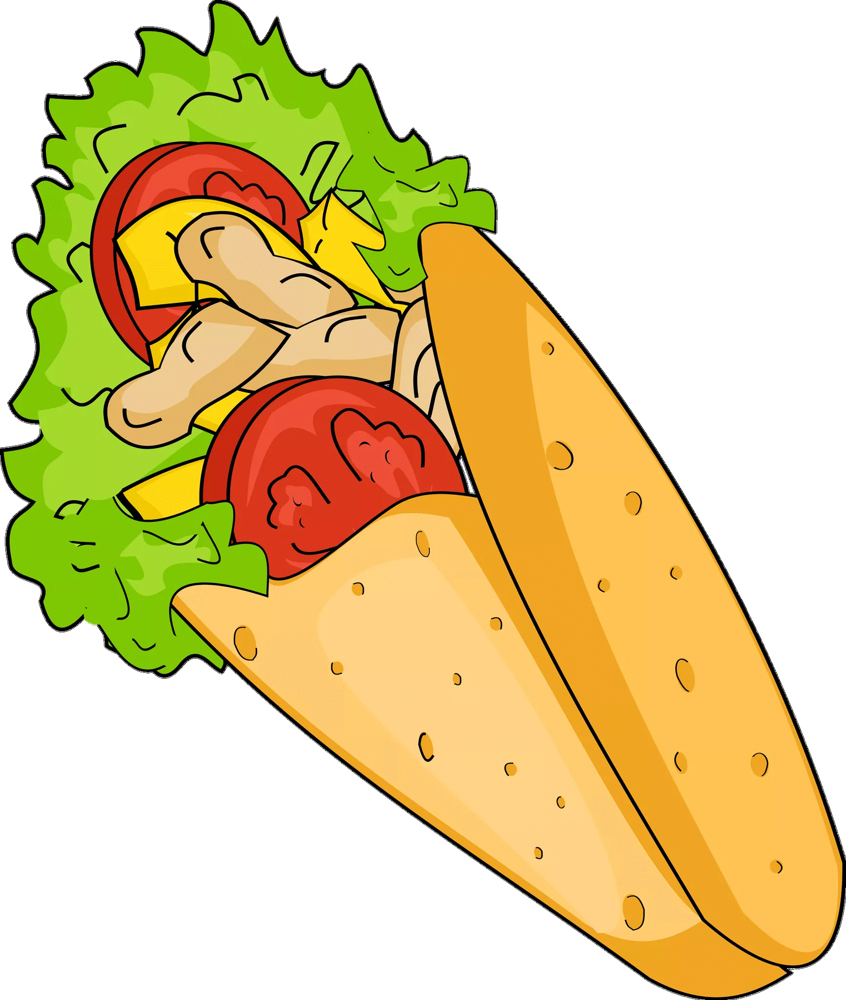

Дюнер

Дюнер
Продукти:
- картофи
- домати
- зеле
- краставици
- свинско месо
- млечен сос
- тортиля
Начин на приготвяне:
Тортилята се запича на слаб огън до лека промяна в цвета. Продуктите, които са предварително приготвени (картофите са нарязани и изпържени, зеленчуците са нарязани и месото е под постоянно затопляне), се поставят на тортилята, по избор на клиента. След това тортилята се завива, опакова се в хартия и се дава на клиента.